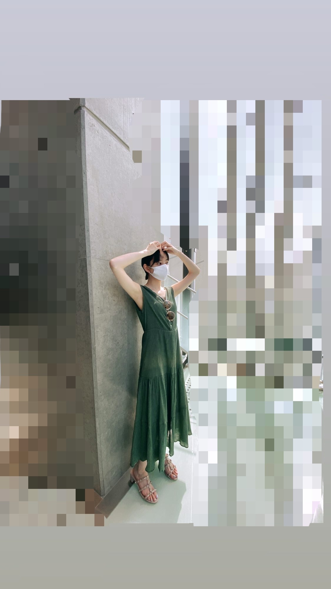
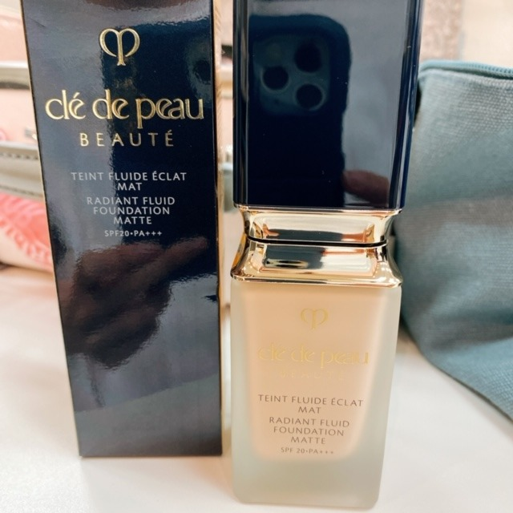
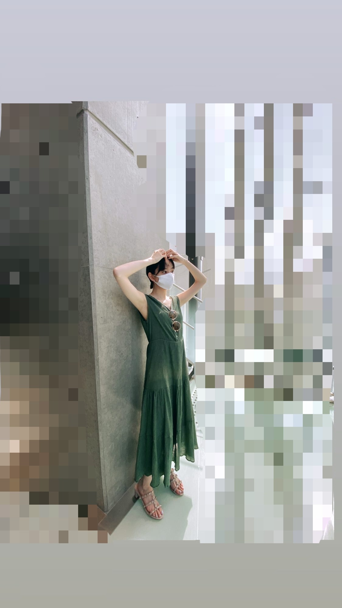
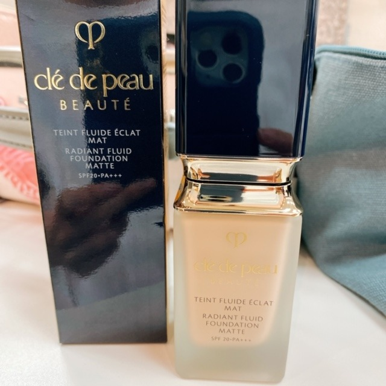

2020/0819Wed前髪あげちゃう
暑くてつい前髪をブワッと
かきあげてしまいます
癖になりつつある
女の人も男の人も前髪あげてるのが似合う人
羨ましいです
ずるい！
いつかもう少しお姉さんになったら
伸ばしてみたいな〜

one-piece...GRL
質問返し
小分けにして返していきます〜
好きな浴衣の色や柄ありますか？
...GRLの水色の浴衣！花柄がすきかな
盆踊りの動画でされていたメイクが
とても可愛かったので
何のコスメを使ったのか教えてほしいです！
...リップやチークアイシャドウはInstagramに
載せてるいつものスタメンたちで
実はファンデーションを新しいのにしてみたんです♡
下地で艶感を出してファンデはマットめにして
マスクヨレがあまりしないようにしています〜
カバー力も肌馴染みも良くてお気に入り！
1番明るい色です
ハイライトはSUQQU！

堀ちゃんが夏の夜に聞きたい曲は何ですか？
...よるのあと / adieu さん
瑠璃色の地球 / 松田聖子 さん
instagram / DEAN さん
未央奈ちゃんはかき氷の味は何味が1番好きですか？
...いちご
お家でGRL の浴衣♪
浴衣を着て洗濯物干したり
お昼ご飯作ったり
なんだか日本の夏を感じれました！
着付けもちゃちゃっと簡単でした！
暑い日が続いていますが
みなさん体調は大丈夫ですか？
わたしは桃や梨を食べて
もりもり頑張ってます(^-^)
お知らせしたいこともいくつかあるので
また近くなったらお知らせします〜
久しぶりにたべるポテチってたまらんやん〜

じゃね
暑くてつい前髪をブワッと
かきあげてしまいます
癖になりつつある
女の人も男の人も前髪あげてるのが似合う人
羨ましいです
ずるい！
いつかもう少しお姉さんになったら
伸ばしてみたいな〜

one-piece...GRL
質問返し
小分けにして返していきます〜
好きな浴衣の色や柄ありますか？
...GRLの水色の浴衣！花柄がすきかな
盆踊りの動画でされていたメイクが
とても可愛かったので
何のコスメを使ったのか教えてほしいです！
...リップやチークアイシャドウはInstagramに
載せてるいつものスタメンたちで
実はファンデーションを新しいのにしてみたんです♡
下地で艶感を出してファンデはマットめにして
マスクヨレがあまりしないようにしています〜
カバー力も肌馴染みも良くてお気に入り！
1番明るい色です
ハイライトはSUQQU！

堀ちゃんが夏の夜に聞きたい曲は何ですか？
...よるのあと / adieu さん
瑠璃色の地球 / 松田聖子 さん
instagram / DEAN さん
未央奈ちゃんはかき氷の味は何味が1番好きですか？
...いちご
お家でGRL の浴衣♪
浴衣を着て洗濯物干したり
お昼ご飯作ったり
なんだか日本の夏を感じれました！
着付けもちゃちゃっと簡単でした！
暑い日が続いていますが
みなさん体調は大丈夫ですか？
わたしは桃や梨を食べて
もりもり頑張ってます(^-^)
お知らせしたいこともいくつかあるので
また近くなったらお知らせします〜
久しぶりにたべるポテチってたまらんやん〜
じゃね
2020/08/19 16:00


コメント(335)
ブログ更新ありがとう。
本当に最近暑すぎるよね…
自分は夏は基本前髪上げてます
前髪が汗でペチャってなるのが嫌いで笑
夏のフルーツいいよね！！
丁度さっきフルーツサンド食べた笑
未央奈も暑さに気をつけて頑張ってね！！
前髪上げてる未央奈ちゃん可愛い！
今日も1番可愛い！
今年はあんまり夏っぽいことできてないから、未央奈ちゃんの浴衣姿が見れて満足
自分も、フルーツを食べて夏を乗り切っています。
でも、部活動で日焼けがとても痛いです！
体調には、気を付けてくださいね。
明日も頑張りましょう！
堀ちゃんにずっきゅーん！
あれ、未央奈ちゃんは最近そんなぱっつんだっけ？やっぱり披露している時に動いているから分からないよね(｡>﹏<｡)（笑）
そしてどう見てもデコ出しも凄く可愛いよ(｡>﹏<｡)
なんだ、結局おでこ出しの写真ないかい！（笑）
もっとお姉ちゃんになったらって、もうだいぶお姉さんと思うけど、この日が来るまで楽しみ＼(^o^)／
（ちなみに、未央奈ちゃんの実際のお姉さんはおでこ出ししています？）
ちょっとだけの質問返しも嬉しいよ＼(^o^)／お疲れさまでした
これからも頑張って(/･ω･)/
体調気をつけて
くれるのかと思った。
自分のタイミングで、前髪上げてみて下
さい。きっと似合います。
この暑さでも、みおなちゃんの食欲は、
落ちてないようで、もりもり頑張るって
ところが元気そう。
コロナに気象、いろいろ負けてらんない
よね。
いつも応援させてもらってます。
質問 好きな果物は？
これからも大変な
毎日かもしれませんが、
これからもずっと応援しているので
メンバーの皆さんと頑張って欲しいです！
いつか未央奈さん会いたいです！
とても美しいです。
体調には気をつけて頑張ってください☺️
堀ちゃんほんとに可愛い、、。
前髪あげてる堀ちゃんも見てみたいです！！
#未央奈に質問
お気に入りのスマホケースってありますか、、？？？
暑いから体調気をつけてね〜
スキンケアってどうしてますか？
未央奈かわいい
堀ちゃんのおでこ出しって中々見ないけど、たまにやってくれた時凄く可愛く見えますよ！僕も運動する時とかは前髪上げてます。
浴衣の写真とっても好きです。日本文化の良さですよね。浴衣の生写真が届くのが今1番の楽しみかなぁ。堀ちゃんのはコンプしたいです。
お知らせ
それでは
きゃわいい(σ≧▽≦)σ
最近、今日は未央奈ちゃんのブログ上がるかな？
あ、上がらなかったなお仕事頑張ってるんだな私も頑張ろう！
今日は上がった！伝えたいことたくさんある！うれしい！
そんな気分です(*ˊ˘ˋ*)｡♪:*°
この前のブログまでもかって名前でやってたんだけどかぶっちゃうかなと思って友達から呼ばれてるあだ名に変えてみました、どうかな？
コメントの最初と最後統一してるから覚えてくれると嬉しかったり、、
755も同じ名前でやってるよ
盆踊り動画みました、3人とも素敵、！
フルーツ美味しいよね、私の家にも桃が沢山あります。
今日はおばあちゃん達とランチしました
最近、おばあちゃん達と会う頻度が多くて嬉しいです
色んな話をして、その中でおばあちゃんが
｢私らは今が1番楽しい｣ って言ってました
素敵です
私もどの年齢になっても今が1番楽しいってずっと言っていられる人になりたいです。
まだまだ頑張ります
あ！私は今日はじめて前髪を巻いてみました、
ずっとストレートだったのでなんだか新鮮な気分、
次のブログ更新も楽しみにしてるね♪
とても可愛いです！
暑いですね。
お体ご自愛ください。
浴衣着て家事をするって素敵！今年は未央奈ちゃんの色んな浴衣姿を見られて嬉しい。本当に可愛い⸜(*ˊᵕˋ*)⸝
マスクよれ気になっちゃうから下地とファンデのこだわり参考になる…
前髪長い人がかきあげる仕草カッコいいよね。未央奈ちゃんもメイク動画でしてた前髪長めのロングヘア似合ってたよ！
ちょっと外に出るだけで参っちゃいそうな暑さだよね…未央奈ちゃんも身体に気をつけてお仕事頑張って☺︎お知らせ楽しみにしてるね︎！
今年の夏はとても暑いですね〜
夏っぽい事しないで終わりそうなんですけど未央奈の浴衣姿を見てなんだか心が満たされました
久々のポテチも美味しいですが、ぼくはやっぱり部活後の冷たい飲み物がたまらないです。
ではお元気で
ブログ更新ありがとう
うちは昨日の夜ご飯にそうめん食べたよ！
暑い日が続いてるから体調に気をつけて頑張ってね！
次の更新も待ってるね〜！！
未央奈はたけのこの里派？？？きのこの山派？？？
てか絶対似合うからやってほしい、、、！
音楽番組でやってくれるの待ってます☺︎
前髪上げてる写真かわいかったー！
私も夏は暑いので前髪上げて過ごしてます☺️
質問！！
未央奈ちゃんは夏っぽいお気に入りのマニキュア
とかありますか？あったら教えてほしいです！！
返してくれると嬉しいなあヾ(｡>﹏<｡)ﾉﾞ✧*。
これからもお仕事頑張って下さい！
ずっとずっと応援してます！
今日の写真もめっちゃかわいかった！！
だいぶ遅くなったけど、昨日やっと、頑張って貯めたお小遣いでみおなちゃんの2nd写真集買えました！！本当に本当に綺麗で、圧巻でした✨私もみおなちゃんみたいに綺麗になれるように頑張るね！
最近暑いけど、ちゃんとお水飲みながら頑張ってね！応援してますー！！
今日も可愛いです！
白な感じの浴衣大人っぽくてとても似合ってます。
堀ちゃんは前髪上げても似合いますよ。
お知らせ？気になります。
質問返し待ってます。
じゃね。
未央奈ちゃんも前髪あげたら可愛いと思うけどな〜！
絶対似合うよ！
〈質問です〉
◎未央奈ちゃんの座右の銘はありますか？
答えてくれたら嬉しいです！
今後のブログも楽しみに待ってます！
体調には気をつけてね！
応援してます！
大好きです♡
浴衣姿めっちゃオシャレ〜
似合ってるね！！
お知らせ楽しみにしてるね♪また、ブログの更新楽しみにしてるね！未央奈ちゃん大好きだよ♪じゃね！
堀 未央奈神推し秀喜より！(≧∇≦)
未央奈こそ体調気をつけてな！
未央奈の写真いつも綺麗なんだけどどんなアプリで撮ってるの？？？？？あとなんでそんなにかわいいの！！！！
ほんとに女の子たちの憧れ☺ほっそくてスタイル完璧だし、欠点が無いよ〜
未央奈のお知らせ楽しみにしてる☻755もいつも見てるよ〜
りのより
ほりちゃん、かわいい！
素のほりちゃんも好き！！
アナスターシャも好き！
チャァオ～～!☆彡
みおちゃん❕笑顔・・
仕事帰りのスーパーで、新作のモンブランケーキが売っていたので買って
我慢できず、十分消毒してから～～⤴️⤴️
お店の外の端じっこで食べた～～❕笑
(本当は～よくないらしい～けど、あたたまらないうちに、味を知らないと！)
新作美味しかった～～～～～⤴️⤴️⤴️❕❤️❤️❤️笑顔
(今日は早朝からなぜか、調合液作る種類が多くて燃えたよぉ～～❕笑笑)
(＠＾▽゜＠）ゞ❤️❤️❤️
❇️❇️おすまし！⚜️❇️⭐彡
暑い日が続くけど堀ちゃんも熱中症気をつけてね。
既に発表になってるけど「ALL MY COLLECTION２」に「遥かなるブータン」のMV収録されるのめっちゃ楽しみ。
今年はまだかき氷食べてない ちなみに自分はブルーハワイが好き！
毎日 暑いが続いてるね水分補給して熱中症には気をつけてください
じゃね
自分も前髪上げるのが似合う人がとても羨ましいです。
でも堀ちゃんは似合うような気がするー
とても暑い日が続いてるね！
熱中症にも気をつけてください。
お知らせ楽しみにしてます。
未央奈さんも体調には気をつけて頑張ってください ٩(｡•ω•｡)و
毎回投稿を楽しみにしてます。
浴衣姿似合って可愛いですね。
自分は坊主頭なので、かきあげるほどの髪がないので、いいなぁって思います。今日はスーパーでかき揚げでも買ってきましょうかね。さて、晩ご飯のおかずも決まった所で、未央奈ちゃん！浴衣姿良いですね！自分は和服着れないんですよね！折角の夏祭りとかなら、浴衣ぐらいは着てみたいですね。
それでは
髪の毛のお手入れ。
私は丸坊主なので、全く、心配ないんだ。
シャンプーもちょっとだけですむよ。
いいでしょ！
じゃあね～！
東京は暑いし、感染対策しんといかんし、大丈夫ですか？
桃たくさん食べてね〜
浴衣似合うなあ
可愛い(〃^ー^〃)
室内でも熱中症気を付けていかないとね ️
今日の午後からもHAPPYを
いやぁ暑いですね。
自分は葡萄食べました。
梨、桃も食べたいなぁ。
前髪無いんでかきあげれない…泣
夏バテしないようにお互い頑張りましょうね。
じゃ、また！
コメントする